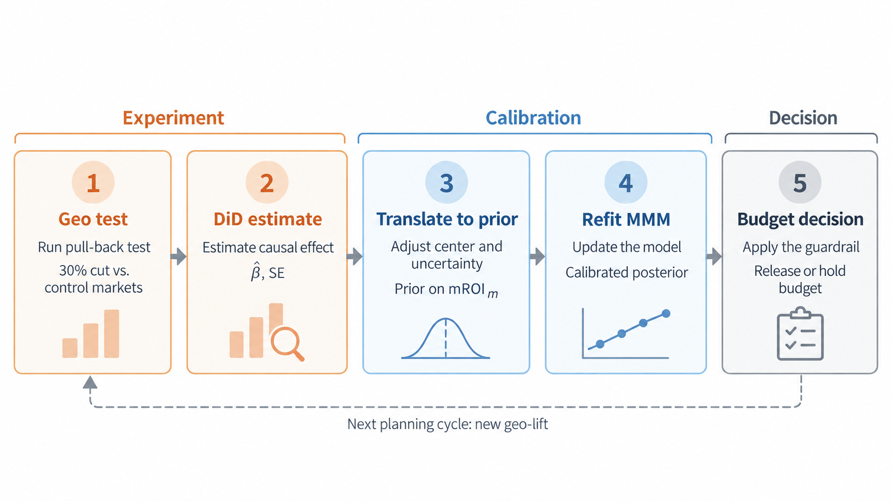

6.4 用实验校准 MMM
关于中文版
本页是英文版 Marketing Science in Python 的AI翻译。英文版为正式版本，如有出入，以英文版为准。代码、Notebook 和图片中的文字保持英文。 阅读英文版
现在，Google Search 有两项结果。第 6.2 节的 MMM 覆盖五个渠道，但对 Search 的估计很不确定。第 6.3 节的实验对 Search 测得较准，但只测了这一个渠道。
下一步决策需要两项结果。削减 Search 会腾出预算。要决定把预算转到哪里，就得比较全部五个渠道，这只有 MMM 能做到。因此，我们要把实验中关于 Search 的发现纳入 MMM。
什么是校准？
校准就是用实验结果改进 MMM。在贝叶斯 MMM 中，校准通过先验实现。用某个渠道的实验估计构建该渠道的先验，再重新拟合模型（图 1）。新模型结合两种信息：测试过的渠道主要依靠实验，其余渠道依靠历史数据。

本例说明了为什么需要校准。实验开始前，笔记本用第 6.2 节的模型预测 Search 支出削减 30%、持续八周时的 iROAS。预测值为 2.95，90% 区间为 0.34 到 8.48。实验测得的值为 1.50。
模型估计约为实测值的两倍，区间也宽到无法支持决策。过去三年 Search 支出几乎不变，模型除了先验之外几乎没有可用的信息。校准补上了这部分信息。
校准分三步，下面逐一说明：
- 找出实验测量的是模型中的哪个量。
- 将实验结果转化为这个量的先验。
- 重新拟合模型，并与未校准的模型比较。
配套笔记本： sec6.2_6.4_mmm_meridian.ipynb 与第 6.2 节共用。步骤 14 到 18 介绍校准。
在 GitHub 上查看
第一步：区分平均、增量和边际 ROAS
Meridian 的先验针对一个具体的量：某个渠道的平均 ROAS 或边际 ROAS。实验结果应当用于实验实际测量的量。因此，第一步是区分三种 ROAS。
假设某个市场每周在 Search 上花 $100。三种 ROAS 都是收入变化除以支出变化，差别在于支出的取值范围（图 2）。
- 平均 ROAS 对应 $0 到 $100，也就是当前的全部支出。MMM 会给出这个量。
- 削减 30% 的增量 ROAS 对应 $70 到 $100，也就是实验中削减的那部分支出。实验测量的就是这个量。
- 边际 ROAS 对应 $100 到 $101，也就是下一美元。MMM 会给出这个量，优化器也据此分配预算。

在逐渐饱和的响应曲线上，最初几美元的回报高于最后几美元，所以平均 ROAS 在三者中最高。削减预算的 iROAS 和边际 ROAS 都描述曲线的上段，二者较接近，也都低于平均 ROAS。
实验测的是削减 30% 的 iROAS。它最接近边际 ROAS，所以应当用来构建边际 ROAS 的先验。
选错会怎样。 Meridian 默认的先验 roi_m 针对平均 ROAS。如果把实验结果放在这里，模型就会把最后 30% 支出的回报当成全部支出的回报。笔记本拟合了这个版本用于比较。它估计 Search 的平均 ROAS 为 1.96，而数据中的真实值为 3.30，低了约 40%。只有实验完全停止某个渠道的投放时，才适合使用平均 ROAS 的先验。
第二步：将实验结果转化为先验
设置 media_prior_type="mroi" 后，Meridian 会对边际 ROAS 设置先验。实验的 iROAS 接近边际 ROAS，但两者并不相同。实验测的是八个市场在八周内削减 30% 的效果。边际 ROAS 描述全国范围内下一美元的回报，也包括以后才产生的收入。每一处差别都需要调整（表 1）。
| 调整项 | 修正的问题 | 对 Search 先验的影响 |
|---|---|---|
| 时长 | 八周测量窗口结束后损失的收入 | 中心值从 1.50 调到 1.71，标准误从 0.257 调到 0.29 |
| 支出规模 | 实验市场约占全国 Search 支出的五分之一 | 标准误从 0.29 调到 0.64 |
| 转换不确定性 | 用削减 30% 的结果近似下一美元的回报 | 标准误从 0.64 调到 0.69 |
时长会提高先验的中心值。第八周削减的支出在第九周和第十周仍会减少收入，这时测量已经结束。Search 的半衰期为一周，约 12% 的效应出现在窗口之外。对于 TV/CTV 这类广告效果持续较久的渠道，八周窗口会漏掉约一半效应。
支出规模和转换不确定性会拓宽先验。实验约覆盖全国 Search 支出的五分之一，将结果推广到整个渠道会增加不确定性。由于削减 30% 只能近似下一美元的回报，转换时还要加入相当于中心值 15% 的最低不确定性。
经过三项调整，实验测得的 1.50（标准误 0.257）转化为 Search 边际 ROAS 的先验，均值为 1.71，标准差为 0.69。这个先验有意比实验结果更宽。实验对所测八个市场的估计较精确，对全国边际 ROAS 的估计则没那么精确，而先验描述的是后者。
时长和支出规模的调整遵循 Meridian 文档中将实验结果转化为先验的方法。转换不确定性是本书增加的调整，因为 Meridian 的方法假定实验以零支出为对照，而我们只削减了部分支出。
# Imports as in Section 6.2. Both helpers are defined in notebook Step 15.
center, se = calibrated_prior_moments(
estimate=1.500, standard_error=0.257,
capture_proportion=0.8756, # duration: share of the effect inside 8 weeks
# taus: duration, spend scale, recency (zero, because the test is recent)
taus=[0.142, 3.606, 0.000],
translation_share=0.15, # translation uncertainty
) # -> center 1.71, SE 0.69
search_mu, search_sigma = lognormal_from_mean_std(center, se)
# mroi_mu, mroi_sigma: one entry per channel. Search gets search_mu and
# search_sigma; the other four keep a weak prior (notebook Step 15).
calibrated_prior = prior_distribution.PriorDistribution(
mroi_m=tfp.distributions.LogNormal(
loc=tf.constant(mroi_mu, dtype=tf.float32),
scale=tf.constant(mroi_sigma, dtype=tf.float32),
name=constants.MROI_M,
),
# adstock and saturation priors from Section 6.2
alpha_m=prior.alpha_m, ec_m=prior.ec_m,
)
# Same lag and holdout weeks as Section 6.2, so the only change is the prior.
calibrated_spec = spec.ModelSpec(
prior=calibrated_prior, media_prior_type="mroi", max_lag=12,
adstock_decay_spec="geometric", holdout_id=holdout_id,
)其余四个渠道保留各自的弱信息先验，然后用同一份数据和同样的设置重新拟合模型。
第三步：比较校准前后的模型
为看清实验改变了什么，我们比较两次拟合，两者只有 Search 的先验不同。两次拟合都对边际 ROAS 设置先验。第一次对所有渠道使用弱信息先验，第二次用实验结果构建 Search 的先验（表 2）。第 6.2 节的模型对平均 ROAS 设置先验，用它作基准会混入另一项变化。
| Google Search | 未纳入实验 | 纳入实验 | 真实值 |
|---|---|---|---|
| 边际 ROAS | 1.95 [0.18, 7.03] | 2.00 [0.93, 3.63] | 1.57 |
| 削减 30% 的 iROAS | 1.75 [0.16, 6.29] | 1.82 [0.84, 3.32] | 1.50 |
| 平均 ROAS | 2.63 [0.22, 9.58] | 2.82 [1.14, 5.26] | 3.30 |
点估计变化很小。未纳入实验时，边际 ROAS 为 1.95；纳入后是 2.00。不确定性变化明显：90% 区间从 [0.18, 7.03] 收窄到 [0.93, 3.63]，宽度不到原来的一半。
这让模型结果能够用于 Search 的决策。第 6.2 节因为区间太宽而暂缓采用 Search 的预算建议。校准后的区间满足了该规则。
两次拟合都建议削减 30% 的 Search 预算，达到优化器允许的最大削减幅度（图 3）。校准保留了原有的调整方向，并把估计精度提高到足以支持这项建议。

对于其他渠道，校准后的模型建议 OOH 和 Meta 各增加 30%，TV/CTV 削减 16.4%，TikTok 削减 11.4%。第 6.2 节对 TV/CTV 和 TikTok 的削减建议分别为 30.0% 和 0.2%。图 3 展示了差异的来源：不纳入实验时，这项变化就已出现，因此它来自改用边际 ROAS 先验。
执行校准后的方案
校准后的方案有两类建议，执行方式不同。
Search 的削减已经过实验，可以实施。 分批将削减扩展到更多市场，随机选出一组市场保留原预算作为对照，并确认 iROAS 仍低于 2.50。
模型建议将削减 Search 后腾出的预算转给 OOH 和 Meta，两者的支出各增加 30%。用随机分配的匹配对测试其中一个渠道增加 30% 的效果。在启动前记录模型预测的 iROAS，然后用实验结果再次校准。一般来说，支出较大、模型区间较宽，且实验结果可能改变方案的渠道值得测试。
平台看板回答的问题更窄。 Search 看板报告基于归因的 ROAS。它把点击 Search 广告之后的所有订单都算进去，包括没有广告也会发生的订单，所以通常高于实验测得的 iROAS。用看板比较 Search 内的关键词和广告素材，用实验和 MMM 决定 Search 的预算。
这就是第 6 部分的工作流程。MMM 提出覆盖所有渠道的预算，实验检验其中不确定且代价较高的建议，再通过校准把实验结果带回模型。然后开展下一轮实验。
要点
- 校准把实验结果作为先验纳入 MMM。这样，模型对测试过的渠道依靠实验，对其余渠道依靠历史数据。
- 将实验结果用于实际测量的量。部分削减最接近边际 ROAS，用于平均 ROAS 会使本例的估计值偏低约 40%。
- 先验应比实验结果的分布更宽，以涵盖后续几周、未测试的市场，以及部分削减与下一美元之间的差别。校准后，Search 的区间明显收窄，点估计变化小得多。